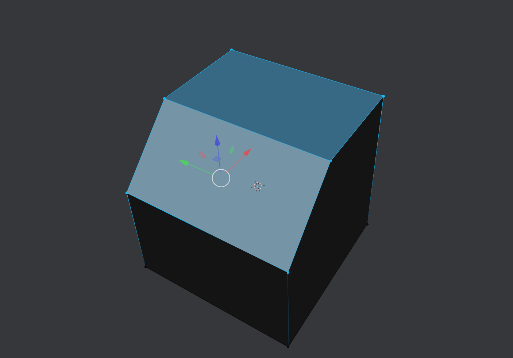
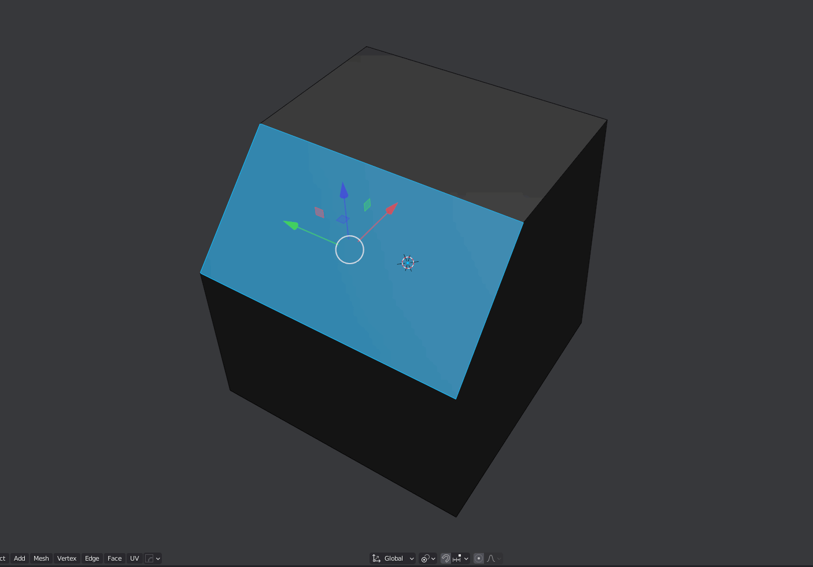

Modes Cycling
Selection Mode Cycle
Cycles between vert, edge and face modes.
Support for sticky selections be enabled from the preferences.

Transform Mode Cycle
Cycles trough move, rotate and scale modes
Support to disable transform at the end of the cycle can be enabled from the preferences.
Transform Orientation Cycle
Cycles trough all the available transform orientations
